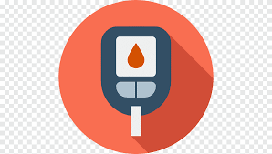

Our Services

Heart Disease Detection

Covid Detection

Diabetes Analysis

Lung Health Detection
Parkinson Detection
Empowering early disease detection through advanced AI technology. Discover potential health risks early and take control of your well-being with AI-powered insights.
Get StartedAI-Vision is revolutionizing healthcare by empowering users with early disease detection through advanced AI technology. Our platform uses cutting-edge machine learning models to provide accurate predictions for multiple diseases, helping users identify potential health risks early on.
Our mission is to make healthcare more accessible, reliable, and proactive. With AI-Vision, anyone can get insights into their health and take steps toward a healthier future, no matter where they are.
Heart Disease Detection
Covid Detection
Diabetes Analysis
Lung Health Detection
Parkinson Detection

Artificial Intelligence is revolutionizing the healthcare industry, enabling more precise diagnoses, personalized treatments, and early detection of diseases. By analyzing vast amounts of medical data, AI models can identify patterns and provide insights that help healthcare professionals make informed decisions.
At AI-Vision, we're harnessing the power of AI to empower individuals with valuable health insights. Our advanced models can assist in identifying risks for various diseases, supporting proactive health management for everyone.
AI-Vision is a healthcare platform that leverages AI technology to help detect potential health risks early on, empowering users with valuable insights into their health.
Our models are trained on extensive medical data, aiming to provide high accuracy in predictions. However, it’s always recommended to consult a healthcare professional for a definitive diagnosis.
Yes, AI-Vision is designed to predict multiple diseases and provides insights across a variety of health areas to ensure a comprehensive health assessment.
We prioritize user privacy and security by implementing strict data protection measures. Your data is encrypted and never shared with third parties without your consent.